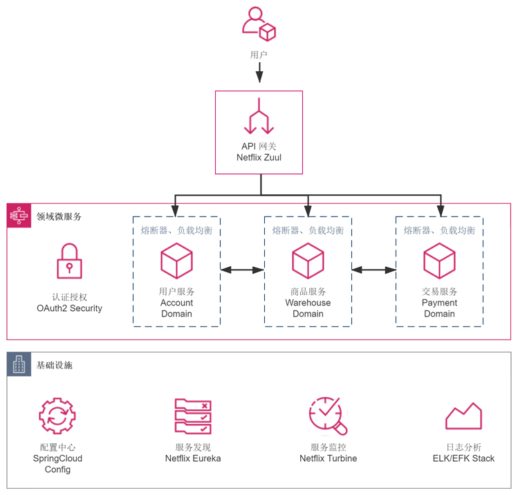

- 00 _导读 _ 什么是“The Fenix Project”？.md.html
- 00 开篇词 _ 如何构建一个可靠的分布式系统？.md.html
- 01 _ 原始分布式时代：Unix设计哲学下的服务探索.md.html
- 02 _ 单体系统时代：应用最广泛的架构风格.md.html
- 03 _ SOA时代：成功理论与失败实践.md.html
- 04 _ 微服务时代：SOA的革命者.md.html
- 05 _ 后微服务时代：跨越软件与硬件之间的界限.md.html
- 06 _ 无服务时代：“不分布式”云端系统的起点.md.html
- 07 _ 远程服务调用（上）：从本地方法到远程方法的桥梁.md.html
- 08 _ 远程服务调用（下）：如何选择适合自己的RPC框架？.md.html
- 09 _ RESTful服务（上）：从面向过程编程到面向资源编程.md.html
- 10 _ RESTful服务（下）：如何评价服务是否RESTful？.md.html
- 11 _ 本地事务如何实现原子性和持久性？.md.html
- 12 _ 本地事务如何实现隔离性？.md.html
- 13 _ 全局事务和共享事务是如何实现的？.md.html
- 14 _ 分布式事务之可靠消息队列.md.html
- 15 _ 分布式事务之TCC与SAGA.md.html
- 16 _ 域名解析系统，优化HTTP性能的第一步.md.html
- 17 _ 客户端缓存是如何帮助服务器分担流量的？.md.html
- 18 _ 传输链路，优化HTTP传输速度的小技巧.md.html
- 19 _ 如何利用内容分发网络来提高网络性能？.md.html
- 20 _ 常见的四层负载均衡的工作模式是怎样的？.md.html
- 21 _ 服务端缓存的三种属性.md.html
- 22 _ 分布式缓存如何与本地缓存配合，提高系统性能？.md.html
- 23 _ 认证：系统如何正确分辨操作用户的真实身份？.md.html
- 24 _ 授权（上）：系统如何确保授权的过程可靠？.md.html
- 25 _ 授权（下）：系统如何确保授权的结果可控？.md.html
- 26 _ 凭证：系统如何保证与用户之间的承诺是准确完整且不可抵赖的？.md.html
- 27 _ 保密：系统如何保证敏感数据无法被内外部人员窃取滥用？.md.html
- 28 _ 传输（上）：传输安全的基础，摘要、加密与签名.md.html
- 29 _ 传输（下）：数字证书与传输安全层.md.html
- 30 _ 验证：系统如何确保提交给服务的数据是安全的？.md.html
- 31 _ 分布式共识（上）：想用好分布式框架，先学会Paxos算法吧.md.html
- 32 _ 分布式共识（下）：Multi Paxos、Raft与Gossip，分布式领域的基石.md.html
- 33 _ 服务发现如何做到持续维护服务地址在动态运维中的时效性？.md.html
- 34 _ 路由凭什么作为微服务网关的基础职能？.md.html
- 35 _ 如何在客户端实现服务的负载均衡？.md.html
- 36 _ 面对程序故障，我们该做些什么？.md.html
- 37 _ 要实现某种容错策略，我们该怎么做？.md.html
- 38 _ 限流的目标与模式.md.html
- 39 _ 如何构建零信任网络安全？.md.html
- 40 _ 如何实现零信任网络下安全的服务访问？.md.html
- 41 _ 分布式架构中的可观测到底说的是什么？.md.html
- 42 _ 分析日志真的没那么简单.md.html
- 43 _ 一个完整的分布式追踪系统是什么样子的？.md.html
- 44 _ 聚合度量能给我们解决什么问题？.md.html
- 45 _ 模块导学：从微服务到云原生.md.html
- 46 _ 容器的崛起（上）：文件、访问、资源的隔离.md.html
- 47 _ 容器的崛起（下）：系统、应用、集群的封装.md.html
- 48 _ 以容器构建系统（上）：隔离与协作.md.html
- 49 _ 以容器构建系统（下）：韧性与弹性.md.html
- 50 _ 应用为中心的封装（上）：Kustomize与Helm.md.html
- 51 _ 应用为中心的封装（下）：Operator与OAM.md.html
- 52 _ Linux网络虚拟化（上）：信息是如何通过网络传输被另一个程序接收到的？.md.html
- 53 _ Linux网络虚拟化（下）：Docker所提供的容器通讯方案有哪些？.md.html
- 54 _ 容器网络与生态：与CNM竞争过后的CNI下的网络插件生态.md.html
- 55 _ 谈谈Kubernetes的存储设计理念.md.html
- 56 _ Kubernetes存储扩展架构：一个真实的存储系统如何接入或移除新存储设备？.md.html
- 57 _ Kubernetes存储生态系统：几种有代表性的CSI存储插件的实现.md.html
- 58 _ Kubernetes的资源模型与调度器设计.md.html
- 59 _ 透明通讯的涅槃（上）：通讯的成本.md.html
- 60 _ 透明通讯的涅槃（下）：控制平面与数据平面.md.html
- 61 _ 服务网格与生态：聊聊服务网格的两项标准规范.md.html
- 62 _ Fenix's Bookstore的前端工程.md.html
- 63 _ 基于Spring Boot的单体架构.md.html
- 64 _ 基于Spring Cloud的微服务架构.md.html
- 65 _ 基于Kubernetes的微服务架构.md.html
- 66 _ 基于Istio的服务网格架构.md.html
- 67 _ 基于云计算的无服务架构.md.html
- 春节特别放送（上）_ 有的放矢，事半功倍.md.html
- 春节特别放送（下）_ 积累沉淀，知行合一.md.html
- 用户故事 _ 詹应达：持续成长，不惧未来.md.html
- 结束语 _ 程序员之路.md.html
- 结课测试 _ 一套习题，测出你的掌握程度.md.html
- 捐赠
64 _ 基于Spring Cloud的微服务架构
你好，我是周志明。
直到现在，由不同编程语言、不同技术框架所开发的微服务系统中，基于Spring Cloud的解决方案仍然是最主流的选择。这个结果既是Java在服务端应用所积累的深厚根基的体现，也是Spring在Java生态系统中统治地位的体现。
而且，从Spring Boot到Spring Cloud的过渡，让现存数量非常庞大的、基于Spring和Spring Boot的单体系统可以平滑地迁移到微服务架构中，让这些系统的大部分代码都能够无需修改，或少量修改即可保留重用。
在微服务时代的早期，Spring Cloud就集成了Netflix OSS（以及Spring Cloud Netflix进入维护期后对应的替代组件）这种成体系的微服务套件，基本上也能算“半透明地”满足了在微服务环境中，必然会面临的服务发现、远程调用、负载均衡、集中配置等非功能性的需求。
不过，我个人是一直不太倾向于Spring Cloud Netflix这种，以应用代码去解决基础设施功能问题的“解题思路”。因为以自顶向下的视角来看，这既是虚拟化的微服务基础设施完全成熟之前，必然会出现的应用形态，也是微服务进化过程中必然会被替代的过渡形态。
不过，我的看法如何并不重要，基于Spring Cloud Netflix的微服务在当前就是主流，甚至直到未来不算短的一段时间内仍然都会是主流。而且从应用的视角来看，能自底向上地观察基础设施在微服务中面临的需求和挑战，能用我们最熟悉的Java代码来解释分析问题，也有利于深入理解微服务的整体思想。所以，把它作为我们了解的第一种微服务架构的实现，我认为是十分适合的。
那么下面，我们就先来具体了解下，在这种微服务架构下Fenix’s Bookstore的需求场景是什么。
需求场景
小书店Fenix’s Bookstore生意日益兴隆，客人、货物、营收都在持续增长，业务越来越复杂，对信息系统的并发与可用方面的要求也越来越高。当然了，由于业务属性和质量属性要求的提升，信息系统需要更多的硬件资源去支撑，这是合情合理的。但是，如果我们把需求场景列得更具体些，就会发现“合理”下面还有很多的无可奈何之处。
比如说，制约软件质量与业务能力提升的最大因素是人，而不是硬件。要知道，大多数企业即使再有钱也很难招到大量的、靠谱的开发者。此时，无论是引入外包团队，还是让少量技术专家带着大量普通水平的开发者去共同完成一个大型系统，就成为了必然的选择。
在单体架构下，没有什么能有效阻断错误传播的手段，系统中“整体”与“部分”的关系没有物理的划分，只能靠研发与项目管理措施来尽可能地保障系统质量，少量的技术专家也很难阻止大量螺丝钉式的程序员，或者是不熟悉原有技术架构的外包人员，在某个不起眼的地方犯错并产生全局性的影响，所以并不容易做出整体可靠的大型系统。
再比如说，技术异构的需求从可选渐渐成为了必须。Fenix’s Bookstore的单体版本是以目前应用范围最广的Java编程语言来开发的，但我们依然可能遇到很多想做可Java却不擅长的事情。比如想去做人工智能，进行深度学习训练，发现大量的库和开源代码都离不开Python；想要引入分布式协调工具时，发现近几年，ZooKeeper已经有被后起之秀Golang的etcd蚕食替代的趋势；想要做集中式缓存，发现无可争议的首选是ANSI C编写的Redis，等等。
很多时候，为异构能力进行的分布式部署，并不是你想或者不想的问题，而是没有选择、无可避免的问题。
微服务的需求场景还有很多，这里我就不多列举了。总之，系统发展到一定程度，我们总能找到充分的理由去拆分与重构它。
在我设定的演示案例中，准备把单体的Fenix’s Bookstore 拆分为“用户”“商品”“交易”三个能够独立运行的子系统，它们将在一系列非功能性技术模块（认证、授权等）和基础设施（配置中心、服务发现等）的支撑下互相协作，以统一的API网关对外提供与原来单体系统功能一致的服务，其应用视图如下图所示：

运行程序
我们可以通过以下几种途径来运行程序，浏览最终的效果。
- 通过Docker容器方式运行：
微服务涉及到多个容器的协作，通过link单独运行容器，已经被Docker官方声明为不提倡的方式。所以在工程中我提供了专门的配置，以便你使用docker-compose来运行：
# 下载docker-compose配置文件
$ curl -O https://raw.githubusercontent.com/fenixsoft/microservice_arch_springcloud/master/docker-compose.yml
# 启动服务
$ docker-compose up
然后在浏览器访问：http://localhost:8080，系统预置了一个用户（user:icyfenix，pw:123456），你也可以注册新用户来测试。
- 通过Git上的源码，以Maven编译、运行：
由于我已经在配置文件中，设置好了各个微服务的默认的地址和端口号，以便于本地调试，所以如果你要在同一台机运行这些服务，并且每个微服务都只启动一个实例的话，那不加任何配置、参数，就可以正常以Maven编译、以Jar包形式运行。
另外，由于各个微服务需要从配置中心里获取具体的参数信息，因此唯一的要求只是“配置中心”的微服务必须作为第一个启动的服务进程，其他就没有别的前置要求了。具体的操作过程如下所示：
# 克隆获取源码
$ git clone https://github.com/fenixsoft/microservice_arch_springcloud.git
# 进入工程根目录
$ cd microservice_arch_springcloud
# 编译打包
# 采用Maven Wrapper，此方式只需要机器安装有JDK 8或以上版本即可，无需包括Maven在内的其他任何依赖
# 克隆后你可能需要使用chmod给mvnw赋予执行权限，如在Windows下应使用mvnw.cmd package代替以下命令
$ ./mvnw package
# 工程将编译出七个SpringBoot Jar
# 启动服务需要运行以下七个微服务组件
# 配置中心微服务：localhost:8888
$ java -jar ./bookstore-microservices-platform-configuration/target/bookstore-microservice-platform-configuration-1.0.0-SNAPSHOT.jar
# 服务发现微服务：localhost:8761
$ java -jar ./bookstore-microservices-platform-registry/target/bookstore-microservices-platform-registry-1.0.0-SNAPSHOT.jar
# 服务网关微服务：localhost:8080
$ java -jar ./bookstore-microservices-platform-gateway/target/bookstore-microservices-platform-gateway-1.0.0-SNAPSHOT.jar
# 安全认证微服务：localhost:8301
$ java -jar ./bookstore-microservices-domain-security/target/bookstore-microservices-domain-security-1.0.0-SNAPSHOT.jar
# 用户信息微服务：localhost:8401
$ java -jar ./bookstore-microservices-domain-account/target/bookstore-microservices-domain-account-1.0.0-SNAPSHOT.jar
# 商品仓库微服务：localhost:8501
$ java -jar ./bookstore-microservices-domain-warehouse/target/bookstore-microservices-domain-warehouse-1.0.0-SNAPSHOT.jar
# 商品交易微服务：localhost:8601
$ java -jar ./bookstore-microservices-domain-payment/target/bookstore-microservices-domain-payment-1.0.0-SNAPSHOT.jar
由于在命令行启动多个服务、通过容器实现各服务隔离、扩展等都比较繁琐，我提供了一个docker-compose.dev.yml文件，便于你在开发期调试使用：
# 使用Maven编译出JAR包后，可使用以下命令直接在本地构建镜像运行
$ docker-compose -f docker-compose.dev.yml up
以上两种本地运行的方式你可以任选其一，服务全部启动后，在浏览器访问：http://localhost:8080，系统预置了一个用户（user:icyfenix，pw:123456），你也可以注册新用户来测试。
通过Git上的源码，在IDE环境中运行：
- 以IntelliJ IDEA为例，Git克隆本项目后，在File -> Open菜单选择本项目所在的目录，或者pom.xml文件，以Maven方式导入工程。
- 待Maven自动安装依赖后，即可在IDE或者Maven面板中编译全部子模块的程序。
- 本工程下面的八个模块，其中除bookstore-microservices-library-infrastructure外，其余均是Spring Boot工程，将这七个工程的Application类加入到IDEA的Run Dashboard面板中。
- 在Run Dashboard中先启动“bookstore-microservices-platform-configuration”微服务，然后可以一次性启动其余六个子模块的微服务。
配置与横向扩展：- 工程中还预留了一些环境变量，以便于配置和扩展，比如想要在非容器的单机环境中，模拟热点模块的服务扩容，就需要调整每个服务的端口号。预留的这类环境变量包括：
# 修改配置中心的主机和端口，默认为localhost:8888
CONFIG_HOST
CONFIG_PORT
# 修改服务发现的主机和端口，默认为localhost:8761
REGISTRY_HOST
REGISTRY_PORT
# 修改认证中心的主机和端口，默认为localhost:8301
AUTH_HOST
AUTH_PORT
# 修改当前微服务的端口号
# 比如，你打算在一台机器上扩容四个支付微服务以应对促销活动的流量高峰
# 可将它们的端口设置为8601（默认）、8602、8603、8604等
# 真实环境中，它们可能是在不同的物理机、容器环境下，这时扩容可无需调整端口
PORT
# SpringBoot所采用Profile配置文件，默认为default
# 比如，服务默认使用HSQLDB的内存模式作为数据库，如需调整为MySQL，可将此环境变量调整为mysql
# 因为我默认预置了名为applicaiton-mysql.yml的配置，以及HSQLDB和MySQL的数据库脚本
# 如果你需要支持其他数据库、修改程序中其他的配置信息，可以在代码中自行加入另外的初始化脚本
PROFILES
# Java虚拟机运行参数，默认为空
JAVA_OPTS
技术组件
Fenix’s Bookstore采用基于Spring Cloud微服务架构，微服务部分主要采用了Netflix OSS组件进行支持，它们包括：
- 配置中心：默认采用Spring Cloud Config，也可使用Spring Cloud Consul、Spring Cloud Alibaba Nacos代替。
- 服务发现：默认采用Netflix Eureka，也可使用Spring Cloud Consul、Spring Cloud ZooKeeper、etcd等代替。
- 服务网关：默认采用Netflix Zuul，也可使用Spring Cloud Gateway代替。
- 服务治理：默认采用Netflix Hystrix，也可使用Sentinel、Resilience4j代替。
- 进程内负载均衡：默认采用Netfilix Ribbon，也可使用Spring Cloud Loadbalancer代替。
- 声明式HTTP客户端：默认采用Spring Cloud OpenFeign。声明式的HTTP客户端其实没有找替代品的必要性，如果需要，你可以考虑Retrofit，或者使用RestTemplete乃至于更底层的OkHTTP、HTTPClient以命令式编程来访问，多写一些代码而已。
尽管Netflix套件的使用人数很多，但考虑到Spring Cloud Netflix已经进入维护模式，所以这里我都列出了上述组件的代替品。这些组件几乎都是声明式的，这确保了它们的替代成本相当低廉，只需要更换注解，修改配置，无需改动代码。你在阅读源码时也会发现，三个“platform”开头的服务，基本上没有任何实际代码的存在。
其他与微服务无关的技术组件（REST服务、安全、数据访问，等等），我已经在Fenix’s Bookstore单体架构中介绍过了，这里就不再重复。
协议
课程的工程代码部分采用Apache 2.0协议进行许可。在遵循许可的前提下，你可以自由地对代码进行修改、再发布，也可以将代码用作商业用途。但要求你：
- 署名：在原有代码和衍生代码中，保留原作者署名及代码来源信息；
- 保留许可证：在原有代码和衍生代码中，保留Apache 2.0协议文件。
© 2019 - 2023 Liangliang Lee. Powered by gin and hexo-theme-book.